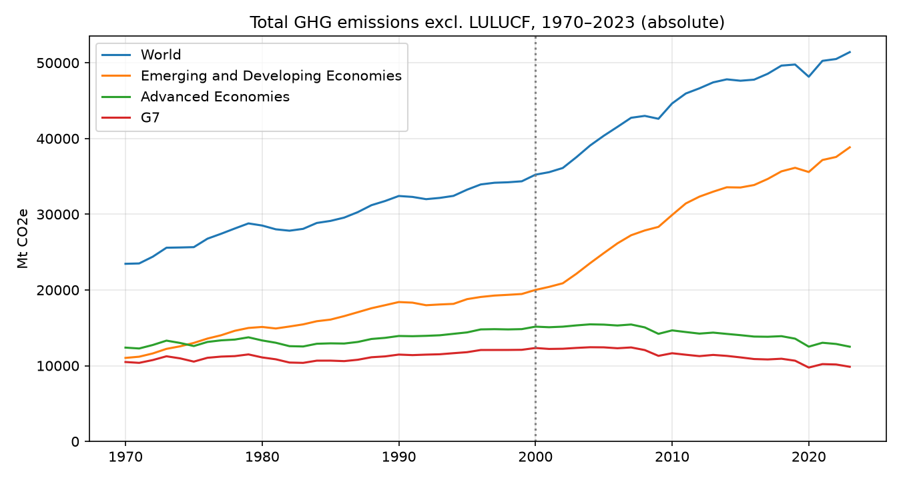
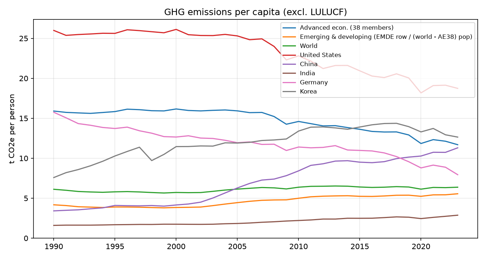

Proposition: Developing economies, not advanced economies, should now bear the main responsibility for cutting greenhouse gas emissions.
FOR the Proposition

Design Decisions and Rationale:
- Score: −1.5. Plot total emissions instead of per-capita. Emerging and developing economies include far more countries and people, so their totals are inevitably larger. This framing makes their rapid growth dominate the chart while advanced economies look flat—persuasive for the proposition, but it hides differences in emissions intensity per person.
- Score: −1. Group many countries into “Emerging and Developing Economies” versus “Advanced Economies” / G7. Aggregation emphasizes the developing-world growth story and downplays heterogeneity within each group (e.g. China vs. low emitters).
- Score: 1. Keep a long time axis from ~1970 countiuous with a clear zero baseline and readable legend. The encoding itself is conventional and easy to read; most of the persuasion comes from which quantity we chose to show, not from broken scales.
AGAINST the Proposition

Design Decisions and Rationale:
- Score: 1.5. Use per-capita emissions. Normalizing by population is a standard fairness frame and makes high individual footprints in advanced economies (esp. the U.S.) visible—directly opposing the proposition.
- Score: −1. Highlight selected countries (U.S., Germany, UK, Japan, Korea, China, India) rather than the same aggregate groups as Figure 1. Country selection focuses attention on high per-capita advanced emitters and very low-emitting developing countries; a different country set could soften that contrast.
- Score: 1. Retain a common time window and labeled series so readers can compare levels without truncated axes. The persuasion here comes mainly from the per-person metric, not from distorting the scale.
Final Reflection
What was straightforward was that switching the same emissions data between totals and per-capita rates was enough to flip the FOR/AGAINST stories, so I did not need a major change in chart type. In contrary, both charts avoid inverted axes or fabricated numbers and still look “reasonable,” which made it harder to draw a clear line between persuasion and deception in writing. The same underlying emissions data can support opposite conclusions depending on whether we show totals or per-capita rates, and which countries we group or highlight. Building both sides made that trade-off concrete: aggregation and metric choice moved the story more than color or chart type did.
What surprised me most was how “reasonable” each chart looks on its own. Neither uses an inverted axis or a fabricated number; both could appear in a policy brief. That made the ethical line harder to draw. I now think of ethical visualization less as a single correct chart but more as honesty about framing—what was normalized, what was grouped, and what alternative view was left out. Even as a reader, I need to keep considering whether there are such points.
For me, an acceptable persuasive choice still lets a careful reader recover the alternative frame (e.g., knowing totals omit population). A misleading choice actively blocks that recovery—by hiding the denominator, cherry-picking a base year without saying why, or using charged titles that overclaim the data. These two figures sit near that boundary.